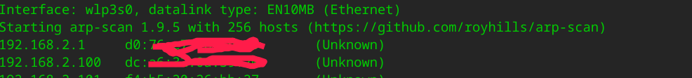
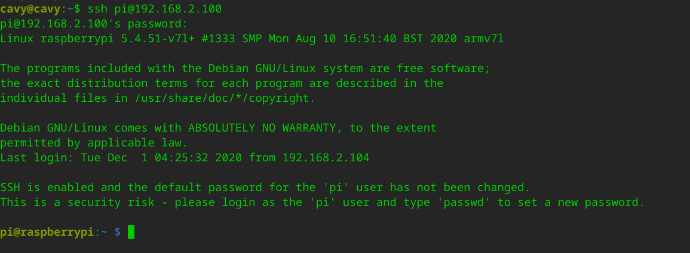
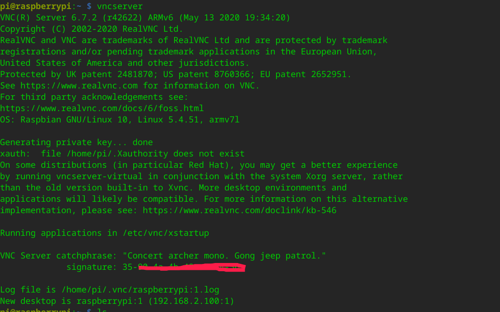
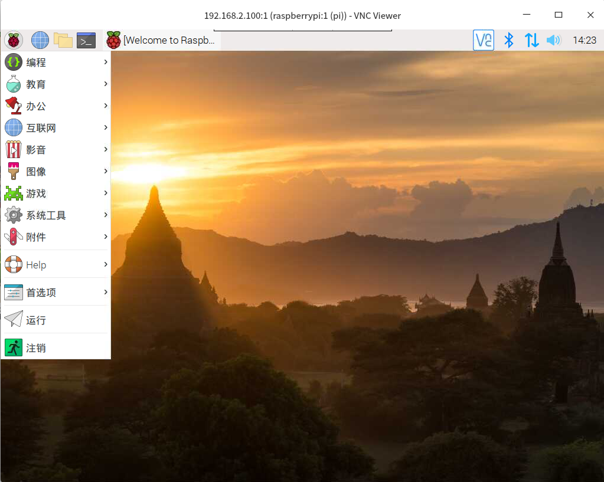

Raspberry Pi 初体验 - Tue, Dec 1, 2020
Raspberry Pi 初体验
Raspberry Pi 初体验
在 Linux 系统上如何连接没有屏幕的树莓派
-
- 准备或制作树莓派的镜像；
- 如何制作？
- 首先到官网下载一个适合自己的镜像，我选择的是下面这个镜像；

- 使用BalenaEtcher烧录 Raspberry Pi 镜像，烧录完成后，会有两个分区boot和rootfs；
- 首先到官网下载一个适合自己的镜像，我选择的是下面这个镜像；
-
- 在boot下创建
wpa_supplicant.conf文件，内容如下；
说明：country=CN ctrl_interface=DIR=/var/run/wpa_supplicant GROUP=netdev update_config=1 network={ ssid="" psk="" priority = 1 }- ssid: 网络的ssid；
- psk： 密码；
- priority: 连接优先级，数字越大优先级越高（不可以是负数）；
- scan_ssid：连接隐藏WiFi时需要指定该值为1；
- 在boot下创建
-
- 在boot下创建不带扩展名的ssh文件；
-
- 启动树莓派，稍等几分钟；
-
- 使用
arp-scan列出局域网内的主机；
sudo arp-scan -interface wlp3s0 -localnet - 使用
-
- 使用
ssh登录到树莓派，树莓派默认账号为pi，默认密码为raspberry; 
- 使用
到此为止，我们已经连上树莓派了
-
- 那么如何能看到树莓派的桌面呢？
-
- 下载
VNC Server到树莓派；
- 下载
-
- 安装并启动
VNC Server; 
- 安装并启动
-
- 下载
VNC Viewer并运行；
- 下载
-
- 输入刚才启动
VNC Server生成的192.168.2.100:1，一直continue，输入树莓派的账号和密码，完成之后就可以看到树莓派的桌面了； 
- 输入刚才启动